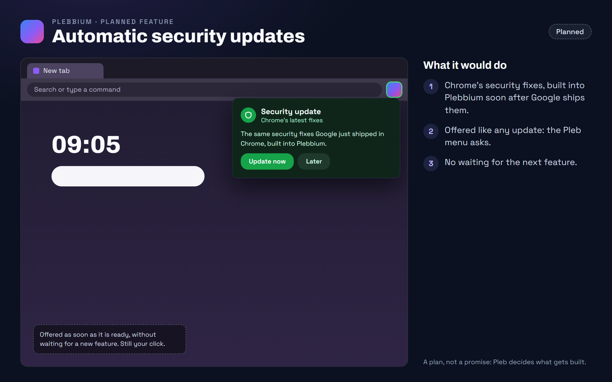

All features › Planned › Automatic security updates
Automatic security updates
PlannedWhen Google fixes a security hole in Chrome, Plebbium gets the same fix as an update of its own, soon after, without waiting for the next Plebbium feature.

What you would get
Plebbium follows Chrome Stable by itself: when Google ships security fixes, a Plebbium with the same fixes is built and offered as an update. You see it the way you see any update: the Pleb menu opens, says it is a security update, and Update now installs it; Restart now finishes it, your tabs restored.
For example
Google fixes a hole a malicious page could use. Shortly after, the Pleb menu says Security update: Chrome's latest fixes. You press Update now, then Restart now, and Plebbium comes back with your tabs.
Why it works this way
A browser is only as safe as its last update
Plebbium is built on Chromium, so Chrome's security fixes matter to it as much as to Chrome. Today they arrive with Plebbium's own releases; this makes them arrive as soon as they can.
Still asks first
Updates ask before downloading, and that stays: a security update is offered, never forced.
Plans can change, and there is no date: Pleb decides what gets built and when.